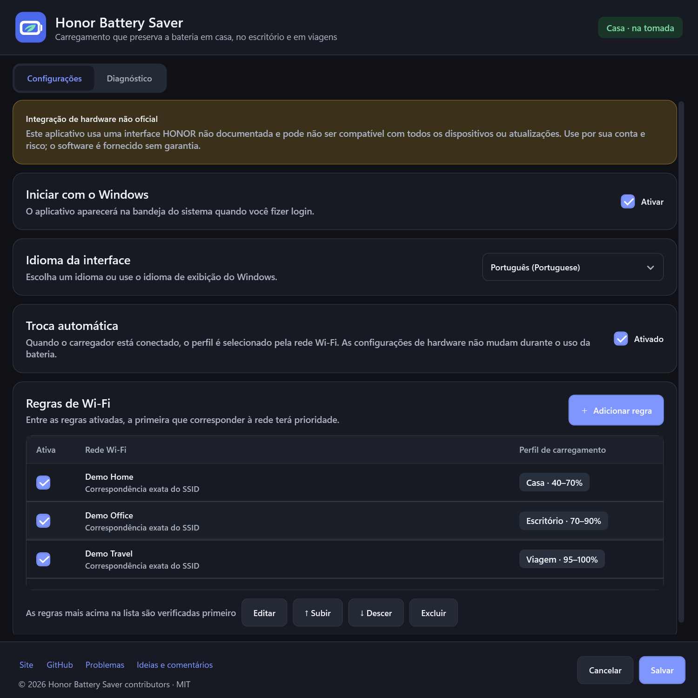
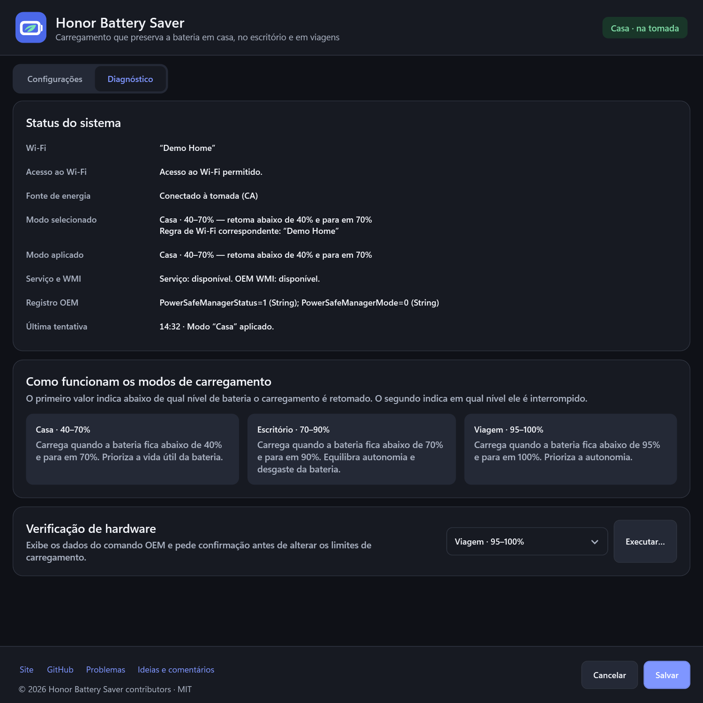

70%
Casa
Reduza o tempo com carga alta quando houver sempre uma tomada por perto.
40%70%
0%100%
O Honor Battery Saver reduz o limite de carga quando há uma tomada por perto e volta a permitir 100% antes de uma viagem. Assim, a bateria passa menos tempo totalmente carregada, sem que você precise trocar de perfil manualmente.
v1.0.0 · pré-lançamento · o instalador ainda não tem assinatura digital Verificar SHA-256
Carregar até 100% faz sentido antes de viajar. Na mesa de trabalho, nem sempre é necessário. O Honor Battery Saver mantém a carga em uma faixa que ajuda a preservar a bateria e volta a permitir a carga completa quando você precisa de mais autonomia.
Cada perfil equilibra a vida útil da bateria com a autonomia de que você precisa. Ao conectar a uma rede Wi-Fi conhecida, o perfil correspondente é ativado automaticamente.
Reduza o tempo com carga alta quando houver sempre uma tomada por perto.
Preserve a vida útil da bateria e mantenha autonomia suficiente para reuniões.
Carregue até 100% só quando precisar de toda a autonomia.
O aplicativo verifica o perfil ao conectar o carregador, trocar de rede Wi-Fi, iniciar o sistema ou sair da suspensão. Você não precisa se lembrar dos limites de carga nem ajustá-los manualmente.
Atribua os perfis certos às redes de casa e do escritório.
Na tomada, o aplicativo verifica a primeira regra correspondente.
Um serviço local aplica o limite de carga e confirma o resultado no diagnóstico.
A interface real no modo escuro. Os nomes de rede e valores de diagnóstico são dados de demonstração, não resultados do seu dispositivo.

Regras de Wi-Fi, troca automática de perfis, idioma e inicialização com o Windows em uma única janela.
Ver em tamanho original
Veja de relance a fonte de energia, o perfil selecionado, o status do serviço e se o limite de carga foi aplicado.
Ver em tamanho originalO Honor Battery Saver não exige conta na nuvem, não envia telemetria e não armazena senhas, BSSIDs nem histórico de varredura de Wi-Fi.
Leia a política de privacidadeO aplicativo usa uma interface OEM da HONOR não documentada. O comportamento pode mudar após atualizações do BIOS, drivers ou PC Manager.
Execute o diagnóstico de hardware e leia o termo de responsabilidade antes de ativar a troca automática.
Leia o termo de responsabilidadeDeixe o Honor Battery Saver ajustar o limite de carga para preservar a bateria em casa e no escritório — e liberar os 100% quando você precisar.
Baixar para Windows — grátis Grátis · código aberto · MIT